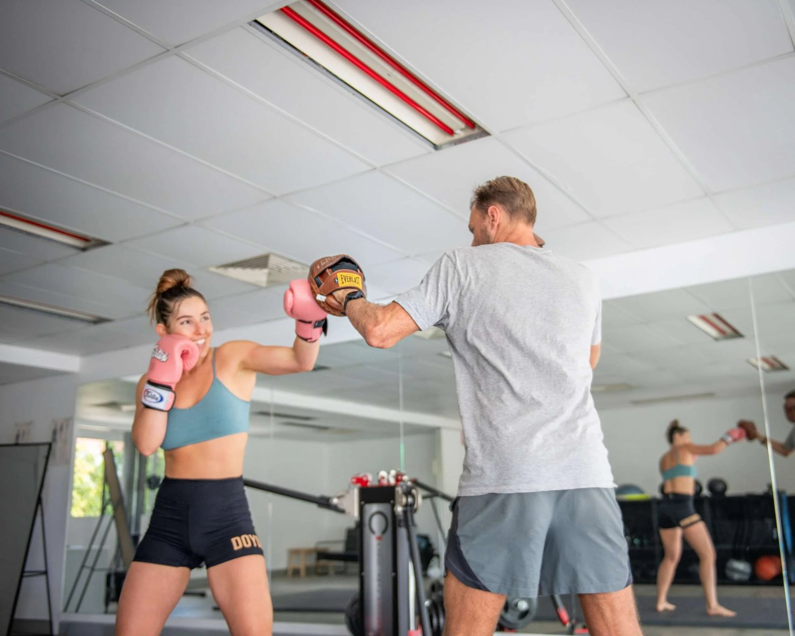

The Superficial Back Line
Louis Ellery
For our introduction to fascia blog (Part 1), please click HERE
For our Superficial Front Line blog (Part 2), please click HERE
Preface: The following blog is almost exclusively based on Anatomy Trains, and is a basic introduction to some of the concepts. If you already have a general knowledge of what is being written, but want a more integrated program, feel free to send us a message HERE , or alternatively visit Functional Patterns .
WHAT IS IT?
We saw in the last blog the muscles in the Superficial Front Line generally contract to give us flexing (bending) of the joints. Evolutionarily this is believed to be a response to danger; the fight or flight response causes us to protect our organs at all costs whilst still keeping our eye on the danger. As a result, the SFL is generally made up of fast twitch fibres that produce alot of force very quickly. In other words, they are the brawn of the operation that is our body.
The Superficial Back Line, if you haven't already guessed, is the brain. Filled with generally slow twitch fibres (bar the hamstring), it is less 'bulky' than the SFL, instead preferring to consist of thickened fascial sheets that can create long, sustained tension to keep us from falling forward.

Image courtesy of Anatomy Trains
From the image to the left, we can see the muscles of the scalp connect behind the head into the erector spinae muscles that extend down into the lower back. The SBL then makes its way through the most superficial part of the sacrotuberous ligament (right near our sitting bones), into the powerful hamstrings. The hamstrings then 'monkey-grip' through the knee joint into the calf muscles, followed by the thick achilles tendon and the plantar fascia beneath the foot.
WHY IS IT RELEVANT?
Much like the SFL, we tend to train all the fascial systems the wrong way. Calf raises, hamstring curls and back extensions **shudders** all target at least one muscle in the SBL, but never do these exercises create tension through the whole chain.
DO YOU HAVE AN SBL DYSFUNCTION?
From what I see training clients, the SBL is perennially in need of retensioning. Most people have restrictions/fascial adhesions in the SFL, which causes the SBL to work harder to balance tension. The SBL is very often the area where people get injured; hamstring tears, lower back spasms, cervicogenic headaches, achilles tendinopathy and plantar fasciitis head the list of what we see every day. Very often clients are surprised when I begin to work on the SFL for a problem listed above. The analogy I use with most of these patients is this;
"Imagine you work in a 10 person workplace. One day, 4 employees call in sick. You then have to work harder for the day to do the 4 sick employees jobs as well as your own. You manage to get through the day, but they advise the boss that they're actually out indefinitely as the flu is more serious than first thought. How would you feel after a day, a week, a month, and a year? What about decades? The bosses decide there are two options in order to get profits going again; they can either give you and the other 5 healthy employees weekly massage to decrease your stiffness, soreness and fatigue, or they can pay for the other employees to get to the doctor and sort out the flu."
SBL Dysfunction Before & Afters
SBL Dysfunction Before & Afters
Obviously the massage for you would feel great, but you'd probably need another one next week, and the week after, and the week after that. Option B would get all 10 employees back on the park quicker, meaning you can focus on your job and keep the ship sailing smoothly.
This is what is happening to our bodies when we fail to 'keep balanced.' The SBL is a major area of 'weakness' in most clients, and doing the above exercises won't help if the SFL continues to fight a tug of war.
Though releasing the SBL can reap significant benefits, I find the easiest way to improve overall function (in the majority of clients) is to release the SFL first and then follow the video sequence from the bottom of the page.
When performing these exercises, it's vitally important to the efficacy of the movement that you know how to engage your TvA, or 'deep core'. The instructions in the video are easy to follow and if you don't feel comfortable/can't access any weights, then unweighted will be fine.
As always, if you have any questions regarding the blog, feel free to contact us HERE. Please like, comment and share the article if you want to hear more about relevant training.
Our next blog will cover the lateral lines, the final cardinal line that we will be looking at. Following that, we will branch off into different exercises to see if they tick all, or any of the boxes that an exercise should.
Thanks for reading,
Louis Ellery
 Share
Share
 Post
Post
 Snap
Snap
 Email
Email
 Share
Share
 Share
Share
If you enjoyed this article, why no share it!
Tight Hamstrings? Stretching Routine for Posterior Chain Functional Patterns - YouTube
Tap to unmute
Tight Hamstrings? Stretching Routine for Posterior Chain Functional Patterns functionalpatterns
functionalpatterns315K subscribers
THE POWER OF POSTURE- http://www.functionalpatterns.com/product/the-power-of-posture-by-naudi-aguilar-e-book/Human Foundations- http://www.functionalpatterns...